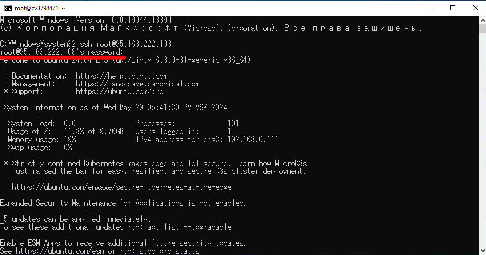

2.2 установка операционной системы Ubuntu server и подключение по SSH
После регистрации домена надо получить VPS сервер и привязать к нему доменное имя (это делается в личном кабинете хостера).
Мы прендуем VPS на том же сайте Рег.ру, подобные сайты обычно предоставляют сразу и услуги регистрации домена и хостинг серверов, перед покупкой нам предложат выбрать операционную систему, на которой будет работать сервер мы выберем Ubuntu server.
После покупки VPS нам надо открыть консоль и подключиться к ip адресу сервера через ssh, ввести логин и пароль которые придут вам на почту.
Команда:
ssh root@“ip адресс”
Password